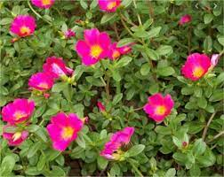

Nome Cientifico: Portulaca grandiflora
Nome Popular: Onze-Horas
Época de Plantio e Colheita: O plantio é realizado no verão e ela floresce na primavera e verão, quando o calor é vigoroso.
Principais Pragas: ácaros, pulgões e cochonilhas.
Controle: Pesticida.
